Short articles on the design: the model, the broker, links, dataflows, Studio, security and operations. Each one names the guide, decision record (ADR) or spec part that holds the full rules. Written against spec 0.2.27 and ADR 0040.
wyrmd · one process per site
Zenoh router inside: routes by key
PLC · Modbus
server · OPC UA
meter · BACnet
polls
links poll the devices, own their branch, re-declare on connect
publishes
~val, ~meta
admin
flow engine
historian
storage
scheduler
DQL
gateway
Studio
wyr · wyrm-agent
AI agent · MCP
WS · ptok
upstream site
QUIC · mTLS
Devices are read by links. A link owns its branch of the tree and publishes values and meta into one wyrmd, where the admin, flows, historian, storage and the embedded services live beside the Zenoh router. People and tools come in through the gateway with a permission token per request; sites connect to each other over QUIC.
01
Overview
wy/
the prefix of every WYRM key
plant/
the site: a broker's name, always in full
downstream/
the section: what links serve
modbus/
the link that owns this branch
boiler/t1/
a path inside the link's tree
~val
the suffix: the value {v, q, t}
client Studio, wyr, flows
Zenoh router routes by the key only
link modbus answers for its branch
get boiler/~meta?view=list
the body stays closed
reply {0: ok} + CBOR
one level of children
One key is one address. Every segment has a meaning, and the last one says what you want: meta, value, a write or an action. The router matches the key and hands the query to whoever declared that branch; the body is never opened on the way.
What WYRM is
WYRM is a broker for industrial IoT with the semantics of IOT-DSA, built on Eclipse Zenoh 1.x as the transport. One Rust binary, wyrmd, runs a Zenoh router with static plugins and adds what made DSA useful: a tree of nodes, reactive list, subscribe and invoke, managed connectors (links), permissions and dataflows. The figure below shows the core of it: a key is an address, the router matches it, and the link that owns the branch answers.
A wyrm is a wingless dragon from Old English: a long body of segments, like a path of nodes, and a relative of the dragon in Zenoh's logo. The broker binary is wyrmd, the crates are wyrm-* and every key starts with wy/<site>/. Licence: Apache-2.0.
Zenoh routes by key expression and never reads the body of a message. It works peer to peer or through routers, survives poor networks, has liveliness tokens for presence and queries with replies for requests. It is native Rust and runs on microcontrollers as zenoh-pico.
We also looked at NATS with JetStream, MQTT 5 with Sparkplug B and OPC UA. Zenoh won on poor networks, reactive presence and small devices. Its weak point is per-user, per-path authorization: its ACL works per session. WYRM closes that gap with its own control plane and signed permission tokens on every request.
Zenoh itself is never patched or forked. The version is pinned exactly (1.10.1) and upgraded with the fixture suite.
WYRM and IOT-DSA
A DSA broker did a lot of work itself. In WYRM, Zenoh takes the transport jobs and each component answers for its own part.
Job
DSA broker
WYRM
Route messages
parses each message
Zenoh routes by key, the body stays opaque
Handshake, reconnect, priority
its own protocol
Zenoh sessions and priorities
The node tree and list
in broker memory
each link answers for its own branch
Disconnected state
$disconnectedTs set by the broker
liveliness tokens
Links, tokens, quarantine
/sys
the admin in wyrmd and the router ACL
Permissions per path
checked by the broker
a signed ptok, checked by the responder
Upstream and downstream brokers
separate logic
QUIC peers, one name space per site
History and dataflow
separate links
an embedded historian and flow engine
Taken from DSA v2 as they are: the status codes, Refreshed, the audit log, the error detail, the permission token and max permission. Not taken: the binary header with one-byte codes (a CBOR map is as small and can grow) and msgpack (WYRM uses canonical CBOR).
Glossary
WYRM
DSA
Meaning
Broker, wyrmd
broker
a Zenoh router with WYRM's static plugins
Site
upstream name
one broker's name space, wy/<site>/; the full name is used everywhere
Node
node
an addressable point of the tree with meta, a value and actions
Link
DSLink
a connector that owns downstream/<link>/**
Requester, responder
the same
who reads and calls, and who answers
Profile
$is, /pub
a shared description of a node type at pub/<profile>
Action
invokable node
a call with parameters at ~act/<name>
Quality
status
good, uncertain or bad; it passes through flows
Attachment
v2 header
a CBOR map beside the payload: status, quality, time, token
ptok
permission token
a short-lived signed token with the caller's rights
Quarantine
/sys/quarantine
where an unknown link or broker waits for Authorize
Gateway
WebSocket server
the entry for people: logins, roles, a ptok per request
Flow
dataflow
a graph of nodes, defined as data at dataflows/<id>/~def
02
Architecture
client wyrm-client
router holds subscriptions
link owns boiler/**
subscribe boiler/*/~meta
liveliness boiler/*
both first, so no update is lost
get boiler/~meta?view=list
Refreshed: t1, t2, pump
put boiler/t2/~meta (unit)
Changed: t2
link stops: its liveliness token is gone
Disconnected: boiler/*
list in one picture: subscribe to meta and liveliness first, then ask once. After that only changes travel: Added, Changed, Removed when a link republishes its meta, Disconnected when its liveliness token drops. No part reads another's memory; everything above is a key.
The broker
One wyrmd runs per site. Inside it: the Zenoh runtime in router mode, the admin (registry, tokens, CA, quarantine, ACL generator, audit), the flow engine, the user gateway, the historian, broker storage, peer links to other sites and the embedded links (scheduler, alarms, DQL, uplink, storage).
These parts never call into each other's state. They talk through keys, even in one process. Dynamic Zenoh plugins (.so) are not used: they must match the router's Rust ABI exactly and give no sandbox. WYRM grows through data (flows) and through links instead.
A node is a key path. Four suffixes give it meaning:
boiler/t1 one node
~meta {type: number, unit: °C, writable, actions: [calibrate]}
~val {v: 82.5, q: good, t: 12:00:03} · changes are published
~set 80.0 in, status out
~act/calibrate {offset: 0.5} in, a result or rows out
A node is a key path; the suffix says which face of it you address. Meta describes it, the value is published, a write is a query answered with a status, an action is a query answered with a result.
~meta: the type, unit, writability, attributes, actions with their parameters, and the profile it inherits from;
~val: the value as {v, q, t}, value, quality and time;
~set: a write, answered with a status;
~act/<a>: an action, answered with a result or a stream of rows.
A ~meta query takes a view: view=list returns one level of children, view=keys returns only keys (with match=), and the default returns the full meta. Meta is a CBOR map with integer keys.
Zenoh lets each sample and query carry an attachment. WYRM puts a canonical CBOR map with integer keys there: 0 status (required in every reply), 1 qual, 2 ts, 3 refreshed, 4 ptok, 5 maxperm, 6 audit, 7 err, 8 rev, 9 rid, 10 seq, 11 last, 12 origin, 13 trace and 14 enc (a zstd payload).
There is one wire codec: canonical CBOR through minicbor. JSON appears only in user files (exports, imports), never on the wire. Codes are declared once in spec/tables.json; 28 fixtures prove that every SDK encodes them the same way.
list subscribes to */~meta and to liveliness * first, then asks ~meta?view=list. No change falls into the gap between them. The stream emits Refreshed, Added, Changed, Removed and Disconnected.
subscribe gets the last ~val, then follows new samples.
set and invoke are Zenoh queries with a payload and an attachment. Streamed actions reply with many rows.
history is ~val?history=…, answered by the historian.
QoS is fixed per suffix: ~set and ~act go with interactive-high priority, block and express; ~val goes as data and may drop under congestion; ~meta goes data-high and blocks.
list returns one level, never a subtree. Meta and values are CBOR with integer keys. Large replies may be zstd-compressed (enc). Between sites, upstream_val_hz caps the rate of value samples. A link polls on its own schedule and publishes changes, so a hundred viewers do not mean a hundred polls.
Storage and history
Last values: the Zenoh storage manager keeps ~val in memory, so a new subscriber gets the current value at once.
Broker storage at wy/<site>/storage: folders and typed values that people and flows write, in one redb file, with JSON export and import.
The historian: watch groups record points into redb, one file per UTC day. Get History returns rows or rollups. A site above can record a point of a site below.
Alarms: the alarm link watches points by class (boolean, out of range, stale, quality), keeps records with acknowledge and notes, and offers them to the same sync links.
Sync: sink links send the historian's change journal on to PostgreSQL, MySQL, MongoDB, InfluxDB or DynamoDB.
The broker persists only its control plane: the registry, the ACL, its PKI, profiles and flow definitions. They go to a write-ahead log (CBOR records with a CRC and an HMAC chain) and a postcard snapshot, so a restart is quick. wyrmd.json5 states intent; the log holds what was done at runtime.
The tree is not the broker's. Each link declares its branch again on every connect, and what it does not declare does not exist. Zenoh 1.10 cannot reload an ACL live, so an ACL change rebuilds the router runtime; clients reconnect and reopen their streams.
Every connection, device and point is in one of these states; a parent's stop cascades down. One owner task per connection runs ping, poll and write in order, so a slow device never races itself. Quality follows the state: good, then uncertain or stale, then bad.
Link SDK
A link implements trait Link: start, reconfigure, on_set, on_invoke, stop. Through LinkCtx it declares nodes and actions, updates values and reaches the tree as a client.
The SDK does the rest. It declares one queryable on wy/<site>/downstream/<link>/**, routes by suffix, answers every ~meta view, checks the ptok before the driver sees a call, and holds the liveliness token. TestHarness runs a link against an in-memory Zenoh with no network.
Protocol drivers describe Connection → Device → Point. #[derive(Params)] turns a struct into a parameter schema with bounds, defaults and secret fields, and generates the Add, Edit and Remove actions.
Each connection has an owner task; ping, poll and write go through it in order.
States: New, Connecting, Connected, Failed, Stopped, StoppedByParent, cascading from parent to child.
Points are polled in batches per device and rate, all the time by default.
An edit is validated, then diffed: only the part that changed is rebuilt.
Reconnects back off exponentially, with a cap and jitter.
A write is not shown until it is read back. Quality falls honestly from good to uncertain to bad.
A config that fails to load stays as a Failed node; it is never deleted.
A link runs embedded in the broker, as a WASM component in the broker's sandbox, as a supervised process beside it, or external on another machine. New code that arrives while the broker runs never loads as native code into the broker: there it runs only as WASM.
embeddedbuilt into wyrmdnative, fastest; only code that shipped with the binary
WASMin the broker's sandboxa component with fuel, memory and time limits; the only way new code enters a running broker
processbeside the brokersupervised, cleared environment, restarts with backoff; its own data directory
externalon another machineTLS and a link token; the same SDK, the same branch
A portable link is one App on wyrm-link-api that runs embedded, as a process or as WASM with the same behaviour. The scheduler, alarms, DQL and the platform uplink ship that way.
Install a link from sys/links: from a built-in driver, a Zip, a URL, a Git repository, a repository index or one .wasm file. Downloads are checked by SHA-256.
The broker unpacks a package to data_dir/packages/<name>/<version> and gives the link its own data directory.
A link with a token is admitted. Without one it waits in quarantine until someone with config calls Authorize.
The supervisor starts a process link with a cleared environment, restarts it with backoff and captures its log.
Packages are not signed. A process package runs as the broker's user, limited by rlimits and the ACL of its branch: install only what you trust. wyr link pack builds a package from [package.metadata.wyrm-link].
By default a link serves only its own branch. To read or write another link's points, it needs grants: sys/links/<id>/~act/grant. The router ACL opens those keys, and the other links trust the requester's key up to the granted level. A package names the grants it needs; the install lists them for you to read.
Telegram (messages and commands), Slack (messages)
Services
scheduler, alarms, DQL, the AI agent, probe, mock, the WASM host
Planned
DLMS; a small link on zenoh-pico for microcontrollers
Protocol links are tested against their own simulators (wyrm-modbus-sim, wyrm-s7-sim and so on). They are not yet verified against real devices.
04
Dataflow
subscribe boiler/t1/~val
expression v > 80
set boiler/fan/~set
82.5 · good
true · good
subscribe boiler/t2/~val
deadband 0.5
publish nodes/t2f/~val
— · bad
— · bad
the value and its quality travel together on every wire
a bad input stays bad at the sink; nothing is written as good by mistake
A flow is a graph stored as data at dataflows/<id>/~def; the engine compiles it and shows each node's state under nodes/<n>. Values keep their quality through the graph. The sinks may only reach what the deployer could reach: see Deploy and proofs.
Logic as data
A flow is a graph of nodes with ports and edges, stored at wy/<site>/dataflows/<id>/~def. The engine in wyrmd compiles and runs it, and shows each node's state under nodes/<n>. Values keep their quality through the graph. A new version swaps in while the broker runs; no code is rebuilt.
WYRM Studio has the editor: a palette built from the engine's own catalog (dataflows/~act/node_types), blocks with one row per field, wires you drag from an output onto a field, validation as you edit, and Deploy. The engine knows 55 block types; the editor draws whatever the catalog says, so a new type needs no change in the app.
~def is read-only. A flow changes only through ~act/deploy {def, proofs}: one admin-signed token per command target, from the same subject, at least the level the target needs. So a flow can never do more than its author could. Targets are links and storage of the same site; a flow cannot write to other sites or to sys/**.
A running flow keeps running when its author later loses rights; ~val.deployed_by shows who deployed it. Operators do not fire on start, so a deploy sends no commands by itself. A manual Run of an action block (~act/trigger) needs the same rights as the deploy of that target.
In the editor a block is a list of fields, one row each. A field is one thing with three faces: the value you type, an input on the left, and an output on the right. So a parameter such as the factor of scale can be typed, fed by a wire, or read by another block, without a second block for it.
A bound field shows the value that comes in along its wire, in the accent colour, never the path of the source.
A teal wire reads a value. An orange wire writes to a device or calls an action.
Values are live. A draft that differs from the deployed version runs as a preview: blocks show their values and each sink shows what it would write, and nothing is written.
You choose which fields a block shows with pins; the choice travels with the flow's layout.
Quality travels with every value. A bad input stays bad at the sink.
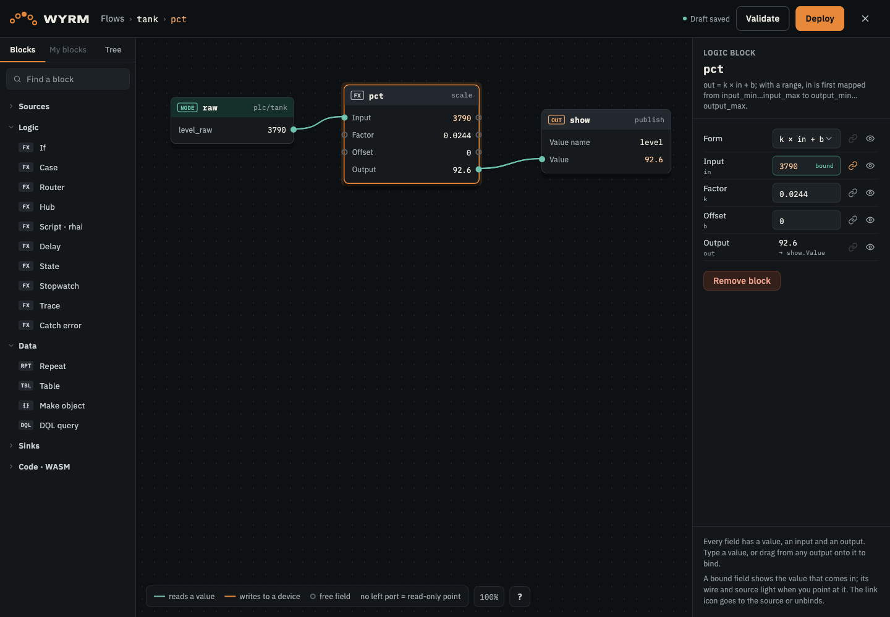
The editor: the palette, the canvas with live values on every row, and the inspector of the selected block.
The palette groups the blocks into sections. Each picture below is the block as Studio draws it, with sample values; the text under it is the engine's own description of the type. ⇄ rows have both ports, result rows only the right one.
Sources · 6
Where values come from: a point of the tree, a node's presence, a timer, a constant, or one read on demand. A source with a left port on its key reads the key a wire names, inside its scope.
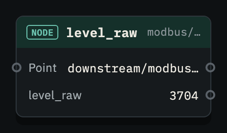
Subscribe subscribeValues of a point as they change; in.key names another point inside key_scope.
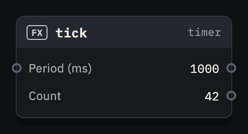
Timer timerA count every period.
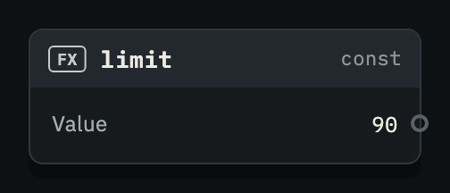
Const constOne value, once at start.
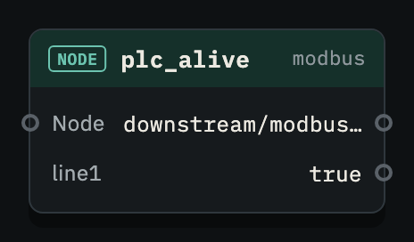
Liveliness livelinessWhether a node is alive (its liveliness token); in.key names another node inside key_scope.
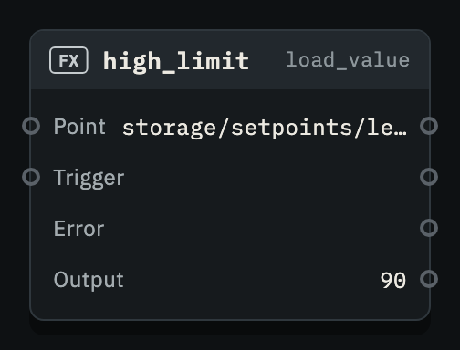
Load value load_valueOne read of a point's value: at the start and when its key changes (auto_run), on trigger, every interval_ms; in.key names another point inside key_scope.
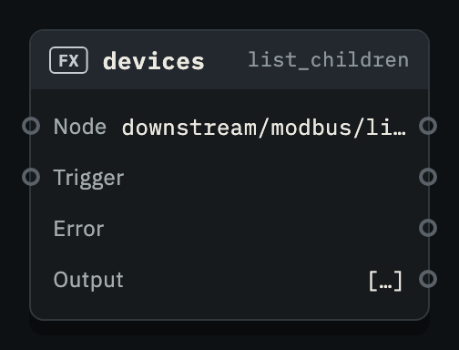
List children list_childrenThe children of a node as a list of rows {name, path, type, …} (at most 1000): at the start and when its path changes (auto_run), on trigger, every interval_ms; in.path names another node inside path_scope.
Logic · 19
Decisions and timing: compare and choose, hold and count, find edges, slow a signal down, and rhai expressions when a block is not enough.
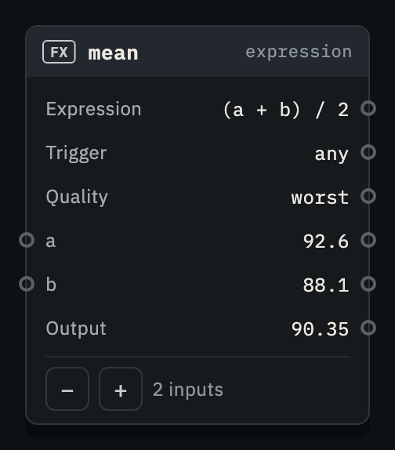
Expression expressionA rhai expression over named inputs (in.<name>).
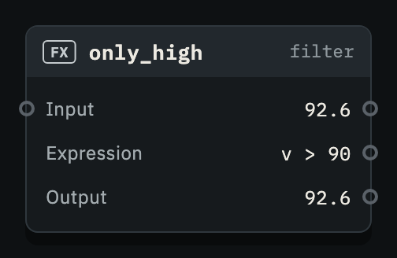
Filter filterPasses the samples a rhai condition over v, q, t accepts.
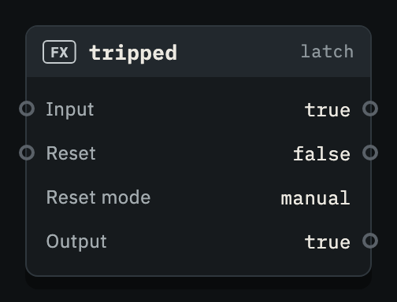
Latch latchHolds true after in was true, until reset.
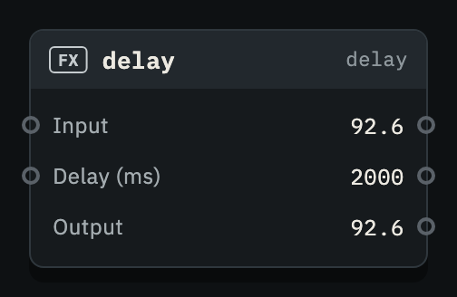
Delay delayEvery sample, later (also breaks a cycle).
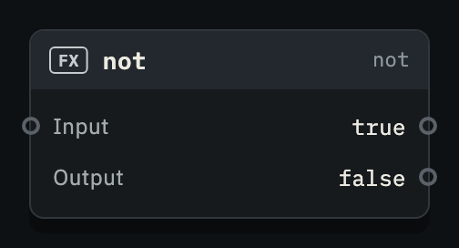
Not notThe opposite of in as a bool.
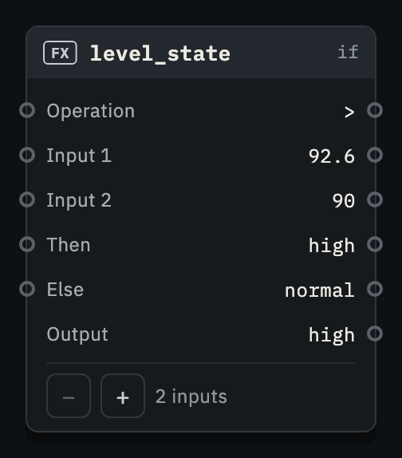
If ifthen when the inputs pass op, else otherwise.
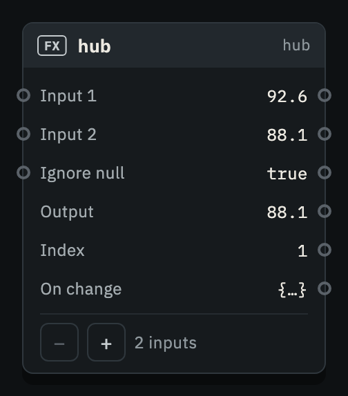
Hub hubThe input that changed last: its value, its index and an event.
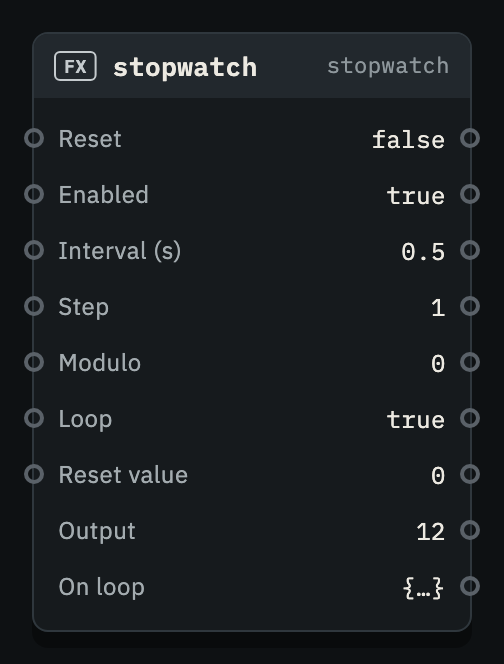
Stopwatch stopwatchCounts by step every interval while enabled; an event when it reaches modulo.
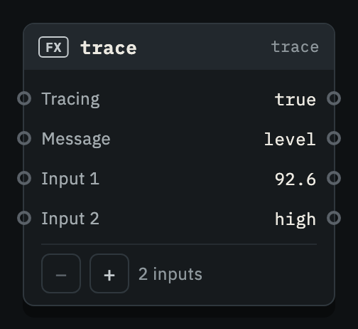
Trace traceWrites msg and the inputs to the broker log at level trace.
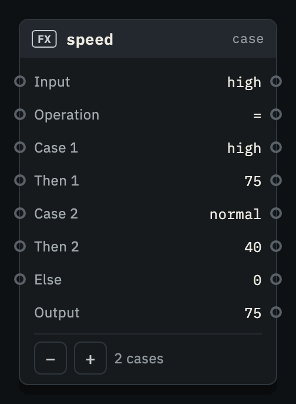
Case caseThe then of the first pair whose case in matches by op; else when none does.
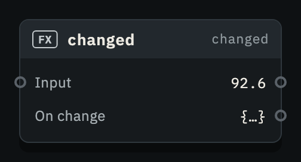
Changed changedAn event when in differs from the sample before (the first sample only starts it).
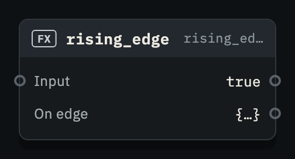
Rising edge rising_edgeAn event when in becomes true.
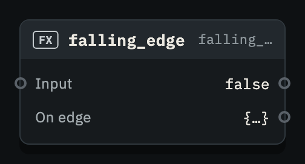
Falling edge falling_edgeAn event when in becomes false after it was true.
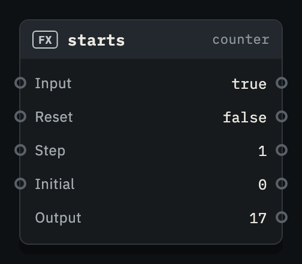
Counter counterCounts the samples on in by step; reset goes back to initial. Keeps its count across a hot swap.
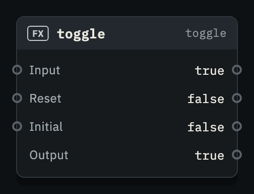
Toggle toggleA bool that every sample on in flips; reset goes back to initial.
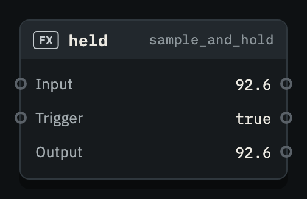
Sample and hold sample_and_holdThe value in has when a sample comes on trigger; it holds it until the next.
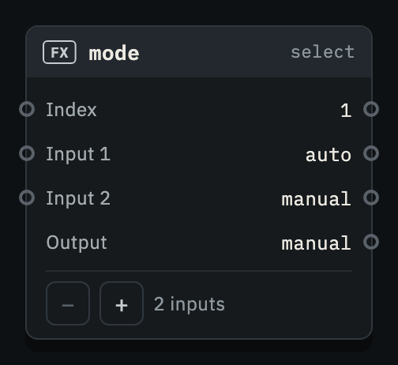
Select selectThe input at position index (from 0); null when there is none.
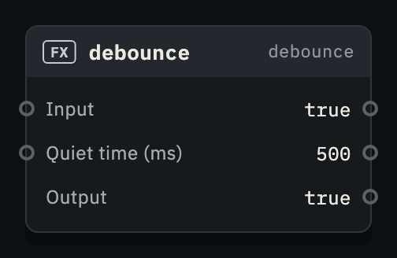
Debounce debounceThe last value of in, once ms passed without another.
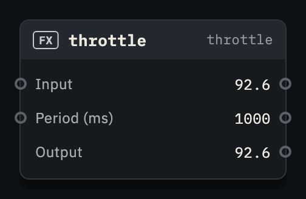
Throttle throttleAt most one value of in every ms: the first at once, then the latest at the end of each period.
Math · 14
Numbers: scaling, arithmetic over any count of inputs, rounding, windows over time and the statistics of a list.
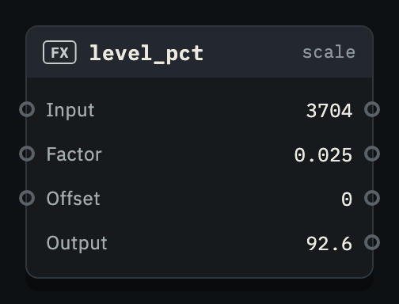
Scale scaleout = k × in + b; with a range, in is first mapped from input_min…input_max to output_min…output_max.
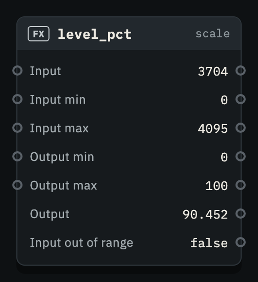
Scale · range form scaleout = k × in + b; with a range, in is first mapped from input_min…input_max to output_min…output_max.
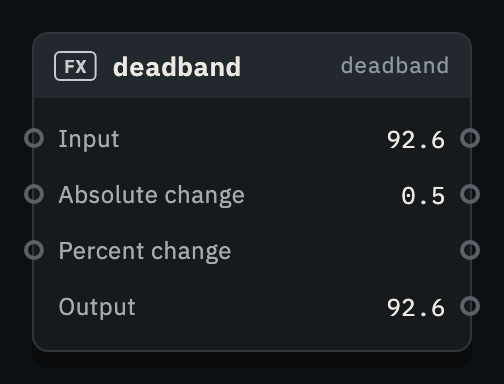
Deadband deadbandPasses a value that moved by more than abs or pct.
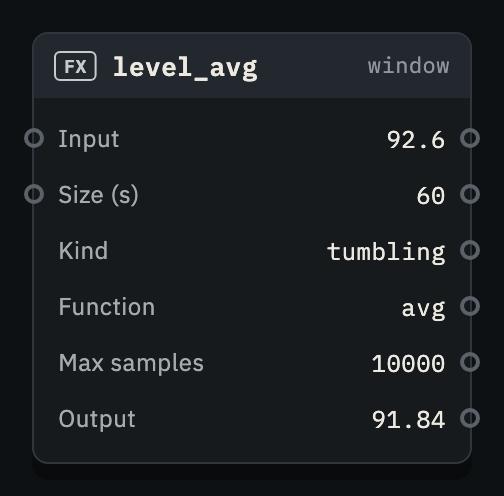
Window windowOne value per window of time: avg, min, max, sum, count or rate.
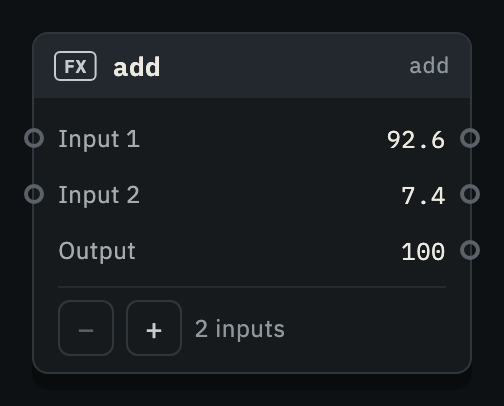
Add addThe sum of the inputs (none: 0).
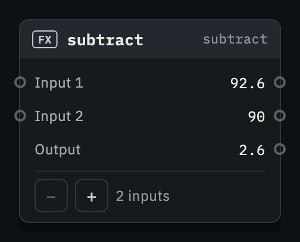
Subtract subtractThe first input minus the others.
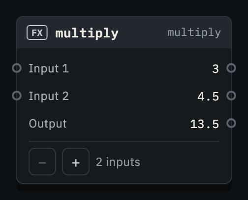
Multiply multiplyThe product of the inputs.
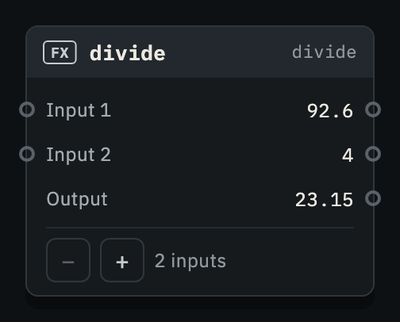
Divide divideThe first input divided by the others (a float; by 0: null).
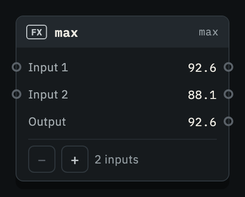
Max maxThe largest input.
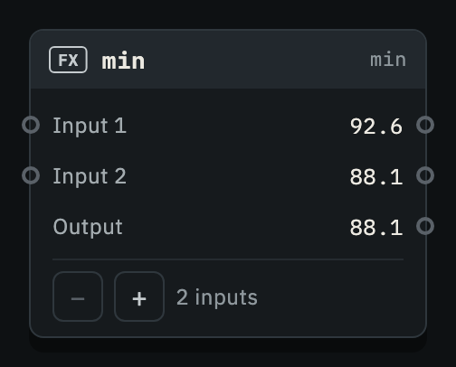
Min minThe smallest input.
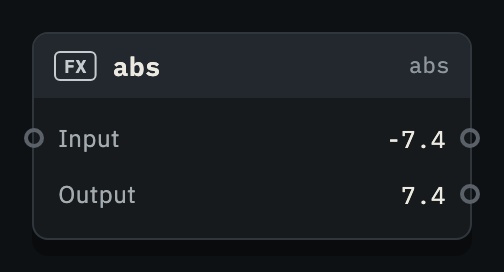
Abs absThe absolute value of in.
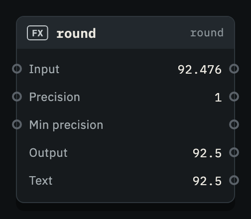
Round roundin rounded to precision places (0: an integer); text: the same with at least min_precision places.
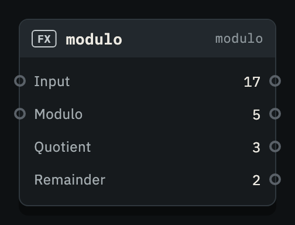
Modulo moduloin divided by modulo: the whole quotient and the remainder (never negative).
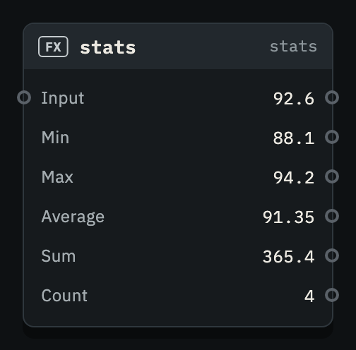
Stats statsThe numbers of a list: the smallest, the largest, the mean, the sum and how many.
Alarms · 1
A limit check with hysteresis and delays, as a value and as an event. Records, acknowledge and escalation belong to the alarm link.
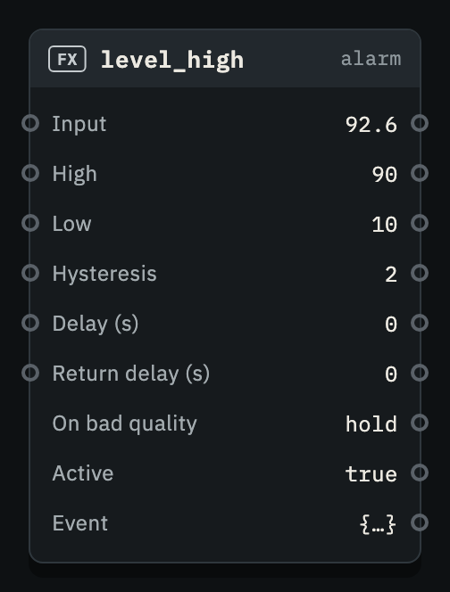
Alarm alarmtrue while in is above high or below low (with hysteresis and delays); an event on each change.
Outputs · 3
What leaves the flow. publish makes a value of the flow itself. set and invoke are commands: the deployer proves the right to each target.
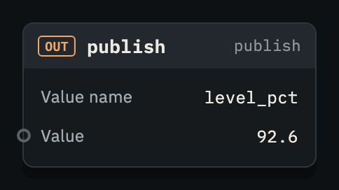
Publish publishPublishes in as a value of this flow: dataflows/<id>/nodes/<node>.
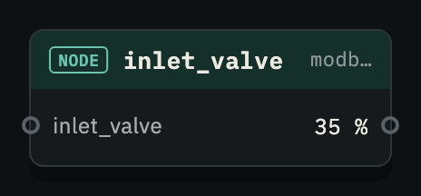
Set setWrites in to a point: when in changes (auto_run), on trigger, every interval_ms (a command: the deployer proves the right, ADR 0008).
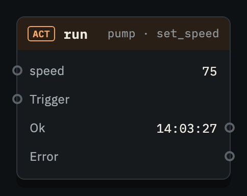
Invoke invokeThe action block: runs an action of a node with its arguments, on trigger, on a changed argument (auto_run), every interval_ms or when in arrives (a command: the deployer proves the right, ADR 0008).
WASM · 1
Your own code as a WebAssembly component with named ports, run with fuel, memory and time limits.
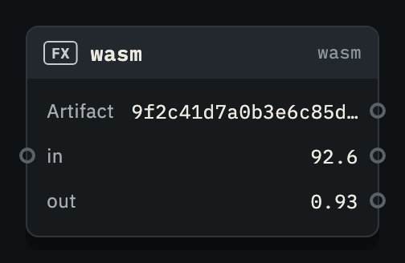
WASM wasmA WebAssembly component (put_artifact) with named ports.
Variables · 3
A typed value you can set by hand or feed by a wire; other blocks read it.
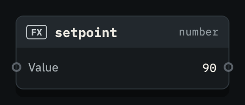
Number numberA number: sent at start, and again when in brings another.
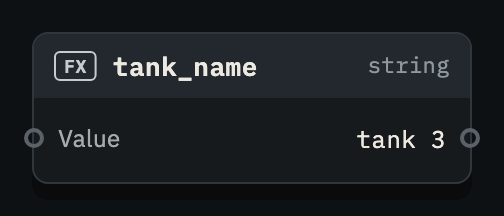
String stringA text: sent at start, and again when in brings another.
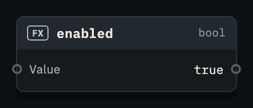
Bool boolA bool: sent at start, and again when in brings another.
Text · 6
Texts and lists of texts: join, cut, replace, measure.
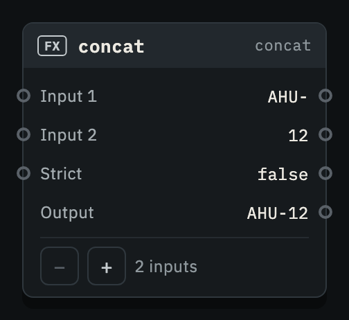
Concat concatThe inputs as one text.
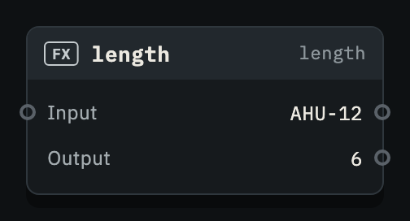
Length lengthThe characters of a text, the items of a list or the entries of a map.Substring substringA part of in as text: length characters from start.Replace replacein as text with every from replaced by to (plain text, no pattern).Split splitin as text cut at separator: a list of texts (at most 1000).Join joinThe items of a list as one text with separator between them.
Data · 3
Maps and lists: build an argument for an action, or take one value out of a structure.
Make object make_objectA map of the inputs: each input's name is a key (for a map argument of an action).Make array make_arrayA list of the inputs, in their order.Get getThe value at path inside a map or a list: a.b.0 (a number is an index); null when it is not there.
My blocks · 1
A custom block made in this flow, drawn as one block. See Custom blocks below.
mean_of_two block:mean_of_twoThe mean of two values.
There is one action block. Drag an action from the editor's Tree tab and it becomes an invoke with the action's own arguments as fields. A point dropped on the canvas becomes a block that reads it; a set block writes to one. The fields of a command block decide how it behaves:
Trigger: a wire runs the command on each event; unbound, it is a Run button on the deployed flow.
Auto run and Every: run when an argument changes, or on a period.
Enabled and Run on start: a switch, and one run at each start. Run on start is off by default, so a deploy sends nothing by itself.
Events Sent, Ok and Error are outputs: wire them to see or to handle the result.
A source may take its key from a wire, but only inside a scope written on the block (key_scope), which the deployer and every watcher must be allowed to read. Command targets stay fixed, so the deploy proofs still cover every target.
The action ramp of a pump as a block: the argument and the trigger are bound, the events show when they last fired.
Select several blocks and make them one: a custom block with named inputs and outputs. It is stored in the flow's definition and drawn as one block per use; its inside opens on the canvas with an Inputs and an Outputs block. The engine inlines it at compile time, up to four levels deep.
A site keeps a library of blocks (put_block, list_blocks). A flow takes a copy, so a later change in the library never changes a running flow.
Inside a custom block: the inner graph between Inputs and Outputs.
Expressions are rhai: a small embedded language for Rust. When an expression is not enough, a WASM node runs a component of the world wyrm:flow/node in wasmtime, with fuel, memory and time limits and no imports. Artifacts are stored by content hash and load on the next deploy.
WYRM Studio on the site plant, reached through edge and central. The rail on the left holds the workspaces; the orange button holds three edits that are staged and not yet applied.
What Studio is
WYRM Studio is the desktop app for the people who set up and run a WYRM network. It replaces the first Flutter explorer. It logs in to one gateway with a user name and a password, and works on that site and on every site below it, each request with that user's rights.
Studio holds no rules of its own. Forms are built from each node's meta, the flow palette from the engine's catalog, and every screen is live from the same list and subscribe any client uses. What the broker does not offer, Studio does not show.
Explorer: the tree of the site. A node opens as a device, a folder, a point or a flow, with live values and quality, parameters, actions as forms, history and audit. Long values open in a floating viewer.
Links: links this broker runs, links on other devices, and the quarantine. Add a link from a built-in driver, a Zip, a URL, a Git repository, a repository or a .wasm file; stop, upgrade, remove, set its secrets and grants.
Flows: the dataflow editor of chapter 04.
History: watch groups of the historian, a trend per group, the points and how they are recorded, purge.
Access: the gateway's users and roles, the grants of each role, and the audit tail.
Sites: the brokers above and below this one as a map, a token for a site below, Connect to an upstream, the platforms the uplink sends to.
Assistant: tasks of the AI agent link and what it read. Approving a plan from Studio waits for one gateway change; plans run today through wyrm-agent.
System: the broker's own values as tiles, router traffic, the standby, the log, maintenance, and a panel of what needs a look.
Links: where each link came from, how it runs, its state.
Sites: who is above, who is below, where data is sent.
History: a watch group, its trend and its points.
System: the broker's values and what needs a look.
Staged changes and errors
An edit of a parameter or a point is staged in the session. Review and apply lists the staged changes with the old and the new value; nothing reaches a device until you apply them. Actions with consequences ask first and repeat what they will touch.
Errors follow one model. A refusal opens a dialog that says what the broker said, in the broker's words, and what to do next; a form opens again with your values kept and the failing field marked. A failed read is a mark on the row and a line in Problems, never a pop-up. A panel that cannot be drawn shows a card and the rest of the screen keeps working.
Problems: what failed, when, and a way to try again.
Studio is a Flutter app: a monorepo of six packages (app, ui, business, models, storage, localization) on AsyncRedux. It talks to the broker only through the Dart gateway client: WebSocket CBOR frames, and HTTP for large arguments. After a broker rebuild the client reconnects and reopens its streams.
Each screen has a written spec and reference pictures; golden tests compare the app with them. It runs on macOS today; Windows and Linux builds are next. Languages: English and Ukrainian. Themes: dark and light.
mint ptok sub user:olena · site plant grant modbus/** : write exp ≤ 15 min · jti once Ed25519 signature
query ~set + {4: ptok}
check, then call the driver version · signature · exp site · grant · jti unused level = min(grant,max,maxperm) ≥ write, else denied
reply ok after read-back
sub, key, sha256
status ok, value updates
A check that fails answers permission denied; the driver never sees the call. The gateway's key is trusted by links; the user's grants decide what it may mint.
One write, end to end. The gateway never forwards a session: it mints a short-lived signed token with the user's grants, and the link checks that token itself before the driver runs anything. The audit record keeps who, which key and a hash of the arguments.
Threat model
The trust boundaries are: link processes and packages, people through the gateway, peer brokers, WASM code and AI agents. Each boundary has its own control: certificates and the ACL for sessions, permission tokens for requests, the sandbox for WASM, human approval for AI plans. The review of 2026-10-31 and its fixes are recorded in ADR 0031.
TLS or mTLS is used everywhere except loopback. wyrmd refuses a plaintext endpoint off loopback unless insecure_plaintext: true says so. Brokers talk over QUIC with certificates from the site's CA. The router ACL is generated from the registry of links, operators and peers, so each session reaches only its own keys.
The broker runs its own CA. A link proves itself with a token (stored as argon2id) and gets a certificate; a downstream broker sends a CSR. Without a token, a newcomer waits in sys/quarantine. Authorize admits it with a name and a group; Deauthorize sends it back. allow_all_links and enable_quarantine switch the policy.
Permission tokens
Every write and action carries a ptok: version byte, CBOR claims and an Ed25519 signature. The claims hold the subject, roles, grants (key expression and level), a max level, the site, an expiry at most 15 minutes away and a single-use jti. An action token may carry auth, the caller's rights, and args, the SHA-256 of the exact body a human approved.
The responder SDK checks the version, the signature, the expiry, the site, the first matching grant and the replay cache, in that order, before the driver sees the call. The effective level is min(grant, max, maxperm). Levels: none, list, read, write, config. A token that fails any check gets a permission error and nothing is written. The sequence at the top of this chapter shows one write end to end.
People log in through the gateway. It keeps users and roles, mints a ptok per request from the role's grants, and proxies WebSocket CBOR frames; large arguments go by POST /api/invoke. Only the admin role reaches sys/**. The gateway also serves the sites below its own. Services and tools may instead connect directly with a client certificate from the broker's CA.
Secrets never enter the tree. Connector credentials are entered in Add or Edit and sealed in the link's data directory; broker secrets live in a sealed store. Logs never show secrets, tokens or values above trace. Every set and invoke is audited under sys/audit/<link>, with its arguments as a SHA-256.
07
Operations
edit add a link, a grant, a peer
sys/links, sys/upstream
registry WAL record, HMAC chain
data_dir/state
ACL generated from the registry
links, operators, peers
rebuild router runtime restarted
no live reload in 1.10
reconnect clients reopen their streams
WyrmGateway.client()
What happens after a config change. The broker persists only its own control plane: the registry goes to a write-ahead log and a snapshot, the ACL is derived from it, and because Zenoh 1.10 cannot reload an ACL live the router runtime is rebuilt. Installs in flight finish first; clients see one reconnect.
Configuration
One file, wyrmd.json5. Its main sections:
site, data_dir, listen, connect: who the broker is and where it listens;
links: links to run at start, with their driver and parameters;
gateway: the listen address and the first admin (password from WYRM_GATEWAY_ADMIN_PASSWORD);
peers: listen, enroll, upstream, downstream and upstream_val_hz;
scheduler, alarm, dql, uplink: the embedded services, with enabled and store_mb;
standby: the other host of a warm standby pair, takeover_s, a witness or arbiters;
sys shows the broker as values: version and Zenoh version, start time, uptime, links total and connected, quarantined, packages, sessions, upstream and downstream connections, ACL denials, CPU, memory, free disk, data size, audit records, and messages, frames and bytes per second in and out of the router.
Logs and audit
The broker keeps its log in a ring buffer with a filter you can change while it runs (sys/log_level, Get Log). Each link has its own level and log; a process link's output is captured by the supervisor. The audit journal is separate and records who did what.
Warm standby
A broker on one host is a single point of failure. WYRM answers in three steps, each useful alone. A supervisor restarts wyrmd; the links declare their branches again and the control plane comes back from the log. Clients and link processes may name several endpoints and serve only the broker that holds the site's liveliness token. And a second broker on another host may follow the first as a warm standby.
The standby copies the registry, flow definitions and gateway users from the write-ahead log, with the HMAC chain checked; then secrets, link tokens, each link's private data, installed packages, broker storage and the historian's rows.
It runs no router and polls no device until it takes over. It takes over when the active is away for takeover_s (10 s by default) and a witness on the plant network, or a majority of arbiters, agrees. So two halves of a split network do not both run the site.
The keys of the site are shared once, by an operator, as a sealed bundle (wyrmd keys export and import), never over the network.
There is no automatic failback. What a cut-off host wrote is set aside and reported; nothing is merged silently.
Replication is asynchronous: the operation made in the last second before a failure may be lost. sys/standby_connected and sys/standby_lag show the state; Studio shows them in System › Availability.
Targets on a 4-core ARM64 board on a LAN: subscribe p99 under 2 ms, a list of 1,000 children under 50 ms, 50,000 samples per second under 50 % CPU. Measured so far on an Apple M4 Max over loopback: list p99 0.57 ms, 50,000 samples per second at about 17 % of one core, subscribe p99 1.2 ms under that load. The board run is still to come. wyr bench prints these numbers.
08
Platform
ask "add t3 to the boiler device"
plan read-only tools: list, get, meta
approve a human token bound to sha256(args)
run set and invoke with the user's rights
steps
token
ptok + args
Every AI path goes through the same four steps. The plan is checked against the live tree, a person approves each config change with a token that names the exact arguments, and the run carries that person's rights through one gateway. wyrm-agent, the MCP server and the agent link differ only in where the LLM sits.
AI assistants
wyrm-agent: a command line for an operator or an AI assistant. It works through one gateway with that user's rights, and checks a plan against the live tree before --apply runs it.
wyrm-mcp: an MCP server over the tree. It runs a dry run first, and config changes need a human approval token bound to the exact arguments.
The agent link: an LLM in the broker that plans a task with read-only tools; a human approves each step with a token before it runs.
For operators: list, sub, set, invoke, values, query, bench. For developers: new scaffolds a link, dev hot-reloads flows, sim starts simulators, record and replay capture and play back data, token mints test tokens, probe runs test scenarios through a gateway, link pack and repo add build packages and repositories.
Clients and SDKs
Rust: wyrm-client gives list, subscribe, set, invoke and history as streams. C: wyrm-ffi with include/wyrm.h. Dart: wyrm_core, wyrm_client over the gateway and wyrm_ffi. The app for people is WYRM Studio, built on the Dart gateway client. Planned: a cloud profile with OIDC.
09
Project
binary
wyrmd
services
wyrm-admin
wyrm-flow
wyrm-gateway
wyrm-history
wyrm-storage
SDKs
wyrm-link-sdk
wyrm-client
wyrm-state
wyrm-link-api
core
wyrm-core · types, codec, fixtures
links/*, tools, dart/* and studio build on the SDKs; each layer depends only on the one below
The workspace reads top down: one binary, the services it hosts, the SDKs that links, clients and tools build on, and one core crate with the types and the wire codec that 28 fixtures hold to the spec.
Status and plan
First versions are done of the core, the control plane, dataflows, peer brokers, security, the connectors, the Dart clients, WASM, the platform tools, alarms, platform uplinks, messengers, the warm standby and WYRM Studio. Still open:
the benchmark on the reference ARM64 board over a LAN;
tests against real devices, beyond the simulators;
the cloud profile (OIDC, ClickHouse, PostgreSQL) and an llm flow node;
history watches on whole subtrees;
Studio: approving an assistant plan in the app, Windows and Linux builds.
crates/: the core types and codec, the link SDK, the client, state, history, storage, schedules, flows, the admin, the gateway, FFI, the WASM host and the portable link layers, and wyrmd.
links/: 27 links.
tools/: wyr and wyrm-mcp.
dart/: the Dart packages (codec, gateway client, FFI).
studio/: WYRM Studio, the Flutter app.
spec/: the normative spec, tables.json and the fixtures.
examples/: the three-site demo, example links and packages, agent plans.
Reading the code
spec/ is normative. A change there updates spec/fixtures/gen.py, regenerates the fixtures, passes every SDK's fixture test and adds a line to spec/CHANGELOG.md.
Decisions go to docs/adr/. Read ADR 0001 to 0011 before touching the architecture, and ADR 0004 before writing a link.
Wire codes are declared once with wyrm_core::wire_enum!; logic uses the typed enum, never as u8.
Drivers do all I/O with timeouts and never unwrap on a network path.
cargo fmt, cargo clippy -- -D warnings and the tests must pass.